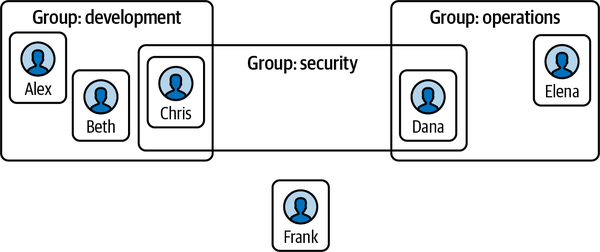
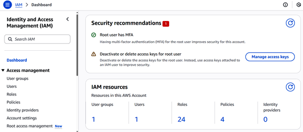
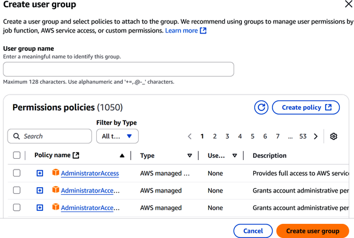
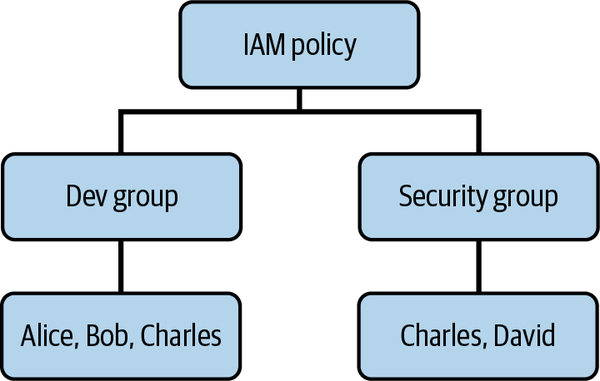

When you’re working in the cloud, one of the first things you need to figure out is who has access to what. Controlling that access—both who gets in and what they’re allowed to do once they’re there—is exactly what AWS Identity and Access Management is built for. IAM lets you define users, groups, roles, and policies to control access across your AWS environment. Whether you’re setting up multifactor authentication, allowing users to log in, or following the principle of least privilege, IAM is a core part of keeping your cloud setup secure.
For the AWS Certified Cloud Practitioner exam, expect IAM to show up. The exam covers basic AWS security concepts, and IAM is a big part of that. You’ll need to understand what IAM does, how policies work, and when to use roles or groups depending on the situation.
Identity plays a central role in how we keep things organized. Just like you need a driver’s license or passport to prove who you are in the real world, systems need a way to recognize users, applications, and devices. And not just recognize them, but verify they’re allowed to do what they’re trying to do.
When we talk about identity in computing, we’re casting a wide net. It’s not just people logging into email or cloud dashboards. It includes applications talking to each other, devices joining networks, and services requesting access behind the scenes. In every case, identity forms the backbone of security. If you can’t verify who or what is trying to access something, how can you trust them?
The most familiar form of identity management is the classic username and password combination. Usually, your username is your email address or some version of your name.
But the password is where it gets tricky. Most systems now demand a mix of uppercase and lowercase letters, numbers, and special characters. The goal is to make your password tough to guess, especially for attackers using automated tools.
Now, what about apps and devices? These don’t log in with usernames and passwords like people do. Instead, they often use digital certificates, which rely on public key cryptography (a method that uses a pair of mathematically related keys) and digital signatures to prove identity. Applications might also include version numbers or serial numbers as identifiers, especially when connecting to networks or APIs.
Here’s a quick breakdown of what happens during a typical login flow for an application:
Before anything gets sent, the browser or application may check the input, like making sure the password is long enough or the phone number looks valid.
The credentials get sent to the server over HTTPS to keep them encrypted in transit.
The server looks up the username and compares the submitted password against a hashed version stored in the database. AWS IAM never stores passwords in plain text.
Once authenticated, the server creates a session token to track the user’s activity while they’re logged in.
None of this is simple. And building an identity system from scratch isn’t something most organizations want to tackle. This is why many turn to identity providers (IdPs), which are specialized services like Okta, Microsoft Entra ID, or Google Workspace that handle tasks such as user registration, login, authentication, and session management. These platforms take the heavy lifting out of identity so that teams can focus on their core product.
While AWS IAM is central to identity and access management, it is not itself an identity provider. Instead, IAM controls who can access AWS resources and what actions they can perform. It often integrates with external IdPs, trusting their authentication. An example is when users are allowed to sign in through an external IdP and then assume roles in AWS. For workforce users (those who use your AWS account), AWS also offers IAM Identity Center, which can act as AWS’s native IdP. In practice, IAM and IdPs serve different purposes but are tightly connected when building secure, scalable systems.
Authentication and authorization often get lumped together, but they play very different roles. If you’re working in AWS—or any cloud platform—knowing the difference is essential for keeping your environment locked down.
Let’s start with authentication. This is how AWS verifies who you are. Typically, that means logging in with a username and password. But if that’s all you’re using, you’re not going far enough, because passwords can be guessed or leaked. Adding MFA, which is covered in the section “Multifactor Authentication (MFA)”, significantly raises the bar for security. You can also connect AWS to external IdPs using the AWS IAM Identity Center. This is especially useful in larger organizations where central identity management is already in place.
But knowing who someone is doesn’t mean you should trust them with everything. That’s where authorization comes in.
Once AWS knows who’s trying to do something, it needs a determination of what they’re allowed to do, which is something the account holder decides. AWS handles this through IAM, using policies, roles, and permission boundaries to draw the lines. Think of it as the difference between unlocking the front door (authentication) and deciding which rooms someone can enter once they’re inside (authorization).
The golden rule here is the principle of least privilege: only grant the permissions someone needs to do their job—nothing more. It’s tempting to give broad access “just in case,” especially when you’re in a rush, but that habit leads to trouble fast. If an account with excessive permissions gets compromised, the attacker has the keys to your kingdom.
When you put all of this together—strong authentication, tight authorization, and layered controls—you build a secure access model that can scale with your AWS usage. And in the world of cloud security, that’s half the battle.
As your AWS setup grows, managing permissions for each user one at a time turns into a logistical mess. This is where IAM proves its worth. It lets you define who can access what—centrally—using a combination of users, groups, and policies.
Consider an IAM user as a single person or application that needs to work with your AWS resources. Instead of assigning permissions to every user individually, you can create groups based on job roles or responsibilities, and then attach permissions to those groups. However, it’s important to note that IAM user groups cannot be nested. This is a common point of confusion.
Another critical concept is the AWS root user. This account has full access to all AWS services and billing. It should only be used for tasks requiring elevated privileges, such as enabling MFA or changing account settings, and it must always be protected with MFA.
By combining IAM users, groups, and policies—while keeping the root user tightly controlled—you can build a permission model that’s both secure and scalable.
Take a look at the example in Figure 6-1.

Here, Alex and Beth are part of the Development group, while Elena belongs to Operations. Chris and Dana also have roles in the Security group because they need to access resources across both development and operations systems for security oversight and compliance checks. IAM doesn’t mind overlapping memberships. Users can belong to multiple groups without any issues.
Chris bridges Development and Security, giving him access to both code repositories and security monitoring tools. Dana spans Security and Operations, allowing her to audit operational systems while maintaining security protocols across infrastructure.
Technically, you can have someone like Frank floating around without a group, and you could assign him permissions as an individual, but that’s asking for trouble. It’s safer and much easier to keep things tidy by managing permissions through groups instead of one-off user settings.
It’s also important to remember the AWS Shared Responsibility Model. AWS secures the infrastructure that runs its services (security of the cloud), while customers are responsible for managing access to their resources using IAM (security in the cloud). Group management, role assignments, and least-privilege policies fall squarely on the customer’s side of that responsibility.
In this section, we’ll go over how to create a new user in IAM.
Log in to AWS.
At the top right, enter this in the search box: “IAM.”
Select IAM. Figure 6-2 shows the dashboard.

At the top, you will see security recommendations. And below, there is a tally of the number of user groups, users, roles, policies, and identity providers. On the sidebar, you can drill down into these categories.
On the left sidebar, select Users. Here, you will see a list of your IAM users.
On the top right, select “Create user.”
Enter a username, which can be up to 64 characters and have letters and numbers and some special characters like # and -.
Select “Provide user access to the AWS Management Console” for human users needing console access, or choose programmatic access (via access keys) for applications or scripts, following the principle of least privilege.
Select “I want to create an IAM user.” You can then use either a custom or autogenerated password.
Choose Next.
This is where you create the permissions. But, as discussed in the section “Basics of IAM”, you should do this for a group. So select Create group.
You will create a name for the group.
There are over 1,000 prebuilt policies you can select, some of which you can see in Figure 6-3.

The policies specify what actions are allowed or denied, on which resources, and under what conditions—such as based on IP address, time of day, or whether the request is made using Secure Sockets Layer (SSL). This allows for fine-grained access control across AWS services. You can also create your own policy.
You add the user to the group.
Select Next.
You will see a review of the details for the user.
Select “Create user.”
Keep in mind that IAM is a global service. This means you will not select a region for it, since it is available across all of the AWS platform.
Policies are JavaScript Object Notation (JSON) documents that define permissions—what actions are allowed or denied, on which AWS resources, and under what conditions.
Policies can be attached to any of the following:
Users directly
Groups (collections of users)
Roles (temporary identities used by AWS services or for cross-account access)
Each IAM policy generally follows the structure in Table 6-1.
| Key field | Description |
|---|---|
|
Versions |
Specifies the policy language version. “2012-10-17” is most commonly used. |
|
Statement |
One or more rules that define permissions. |
|
Effect |
“Allow” or “Deny”—controls whether the action is permitted. |
|
Action |
The specific API operations permitted (e.g., |
|
Resource |
The AWS resource(s) the actions apply to—can be * or specific Amazon Resource Names (ARNs). |
|
Condition (optional) |
Additional constraints (e.g., IP address, time). |
Suppose you have a group called “Developer”. You attach the following policy to this group:
{
"Version": "2012-10-17",
"Statement": [
{
"Effect": "Allow",
"Action": [
"ec2:RunInstances",
"ec2:StopInstances",
"ec2:TerminateInstances",
"ec2:DescribeInstances"
],
"Resource": "*"
},
{
"Effect": "Allow",
"Action": [
"s3:PutObject",
"s3:GetObject",
"s3:ListBucket"
],
"Resource": "*"
},
{
"Effect": "Allow",
"Action": [
"cloudwatch:GetMetricData",
"logs:DescribeLogGroups",
"logs:GetLogEvents"
],
"Resource": "*"
}
]
}
Here’s what is happening:
EC2 permissions allow users to launch, stop, terminate, and describe instances.
S3 permissions grant the ability to upload, download, and list objects.
CloudWatch Logs lets users view metrics and logs for performance monitoring.
This is a balanced policy. Developers get the tools they need to do their jobs—such as to build, test, or debug—without compromising security. They cannot change IAM configurations or network security settings.
When you attach a policy to a group, all users within that group automatically inherit those permissions. If a user is a member of multiple groups, their total permissions combine all group policies plus any directly assigned individual policies.
Let’s use an example where an IAM policy is applied to two different groups, as seen in Figure 6-4.

Users inherit permissions based on their group memberships, with overlapping users receiving combined permissions from all their groups.
This is the breakdown:
Alice and Bob receive permissions exclusively from the Developer group.
Charles belongs to both the Developer and Security groups, so he receives the combined permissions from both groups.
David receives permissions from the Security group and may additionally have individual policies applied directly to his account.
When you delete a user from a group, they immediately lose all permissions that were inherited from that group. This happens instantly with no delay or grace period. However, the user retains any permissions from other groups they still belong to, individual policies directly attached to their account, and any roles they can assume.
This immediate permission revocation is actually a security feature designed to ensure that access control changes take effect without leaving security gaps.
Most IAM systems don’t automatically notify the user that their permissions have changed, so they’ll discover it when they try to access something and get denied. When removing users from groups, especially in production environments, it’s good practice to communicate the change beforehand and verify they have alternative access paths if needed for their work.
In addition to identity- and group-based policies, IAM also supports permission boundaries. A permission boundary sets the maximum permissions an IAM user or role can have. Even if a policy grants broader access, the permission boundary acts as a ceiling. This helps to ensure the principle of least privilege is enforced.
This is especially useful in delegated administration scenarios. For example, if you allow a team lead to create IAM users for their project, you can apply a permission boundary so that any new users they create cannot exceed the defined limits.
When you’re managing access to IAM, you can create a password policy. It’s a basic step, but it goes a long way in protecting your account. By creating clear, consistent rules around passwords, you make it harder for bad actors to slip in through weak or reused credentials.
AWS lets you customize this policy with a few key settings:
You decide how long passwords need to be. Having 8 or 12 characters is common.
You can require a mix of uppercase and lowercase letters, numbers, and special characters.
Want users to reset passwords every 90 days? You can set that up easily. It helps reduce the chance of long-term exposure if a password gets compromised.
AWS can remember up to 24 past passwords and block users from recycling them.
You can choose whether users are allowed to change their own passwords. In most cases, especially with expiration policies in place, you’ll probably want to let them.
This policy applies across the entire AWS account. So every IAM user is subject to it unless you explicitly say otherwise. However, the password policies do not apply to the root user. For this, you will need to secure the account with MFA.
On its own, a good password policy makesbrute force attacks and basic credential stuffing much harder. (Brute force attacks involve guessing a huge number of possible passwords, andcredential stuffing uses known usernames or email addresses and their corresponding passwords to gain further access.) But if you’re dealing with sensitive accounts—like admin roles or the root user—adding MFA is important. It adds another layer of defense that passwords alone just can’t match.
This is how you can create a password policy:
Using MFA is critical with IAM. It’s one of the simplest, most effective ways to stop unauthorized access—especially if a password ever gets exposed. This is why AWS treats MFA as a best practice, and in many cases, it’s mandatory for high-risk actions like changing IAM policies or managing billing.
MFA adds an extra layer of security by requiring users to prove their identity with two or more different types of authentication factors. But a username doesn’t count. It’s considered public and often easy to guess.
Real factors fall into three categories:
Usually a password or passphrase. Sometimes it’s an answer to a security question.
A device you physically possess, like a phone that receives a one-time password or passcode (OTP) via an authenticator app (Google Authenticator, Authy, and so on). AWS also supports hardware tokens that generate time-based codes.
Biometrics like fingerprints or facial recognition. AWS doesn’t directly collect biometric data, but it can work with identity providers (like AWS IAM Identity Center or other IdPs) that support biometric logins.
By requiring at least two of these factors, AWS dramatically increases account security. MFA makes life harder for attackers using tactics like phishing (when an attacker tries to trick a user into revealing sensitive information), brute-force guessing, or hijacking sessions. One Microsoft study reported that MFA blocks over 99% of account takeover attempts. And a separate study from Google, NYU, and UC San Diego found that MFA stopped every automated bot attack and thwarted 96% of phishing efforts.
Setting up MFA in AWS is straightforward. You’ve got a few options, depending on your needs:
Attach IAM policies that enforce MFA for sensitive operations.
Use virtual MFA apps on smartphones or go with hardware MFA devices.
If you’re using the AWS IAM Identity Center, you can also plug in Universal 2nd Factor (U2F) security keys (like YubiKeys) that follow the FIDO (Fast Identity Online Alliance) standard.
Using MFA can certainly be a hassle, as it means going through several steps. Then again, the added complexity plays a big role in making MFA more secure. Still, strong security doesn’t have to come at the cost of user convenience. This is where passwordless authentication makes a difference. Instead of relying on passwords or one-time codes, it uses biometrics like facial recognition or fingerprint scans to verify identity.
One of the key advantages of passwordless authentication is how it handles sensitive data. Biometric information never leaves the user’s device. It stays local, which protects privacy and limits the damage in the event of a server breach. Behind the scenes, this process uses public-key cryptography. When you first set it up, your device generates two keys: the public key, which is sent to the authentication service, and the private key, which stays safely stored on your device. That way, even if someone breaks into the system, they can’t do anything without the private key you control.
AWS has leaned into passwordless authentication. Amazon Cognito, for example, now supports modern, password-free sign-in methods. Users can authenticate using passkeys based on WebAuthn (Web Authentication, a standard published by the World Wide Web Consortium) and FIDO2 standards (jointly established by FIDO and the World Wide Web Consortium), which let them log in using built-in tools like Apple’s Face ID, Apple’s Touch ID, or Windows Hello. There’s also support for OTPs sent by email or Short Message Service (SMS). These features are part of the Cognito Essentials tier and are available in all standard AWS Regions, except for the GovCloud regions in the US.
IAM also supports passkeys as a method for MFA. Both root and IAM users can register passkeys based on FIDO standards, whether through built-in biometrics or physical security keys.
Finally, AWS Amplify makes it easy to bring passwordless authentication into your web or mobile apps. By integrating directly with Cognito, Amplify lets developers implement options like email or SMS OTPs, as well as WebAuthn passkeys. This means you can offer a secure, password-free login experience without adding a lot of complexity to your codebase.
So far in this book, we’ve looked at how to access AWS using the Management Console. But there are two other approaches, which include the AWS Command Line Interface (CLI) and the AWS software development kits (SDKs).
The AWS CLI allows you to run commands in your terminal. It’s fast and allows for scripts and automation.
The CLI is available for the following:
Operates on many distros like Amazon Linux, Ubuntu, CentOS, Fedora, RHEL (Red Hat Enterprise Linux), and Debian
Once you’ve installed the CLI, you’ll need to configure it with your AWS credentials. This can be done using the aws configure command, which prompts you to enter your access key ID, secret access key, default region, and output format. In the section “Credentials,” I’ll show how to create these keys.
When you use the CLI, you will always start with the aws command. Here’s an example:
aws s3 cp file.txt s3://my-bucket/
This command takes a plain-text file and copies it into your specified S3 bucket.
Besides the CLI, there is also AWS CloudShell. It’s a browser-based terminal built into the AWS Management Console. To access it, you’ll click the shell icon in the top-right corner of the screen.
These are some of the features:
You can choose from Bash, PowerShell, or Z shell.
Each AWS Region gives you 1 GB of persistent storage, so you can save scripts, config files, and anything else you want to keep between sessions.
CloudShell automatically uses the permissions of the user signed in to the console.
You can tweak the font size and choose between light and dark themes.
Open several terminal tabs and switch between them easily.
If your browser crashes or your connection drops, CloudShell uses tmux to restore your session.
If you’re building an application and want it to integrate to AWS directly, you can use the AWS SDKs. These are language-specific libraries. Here are just a few that are available:
JavaScript
Python
Java
.NET
Go
C++
Swift
The SDKs take care of tasks like signing requests, handling retries, and catching errors. Moreover, they give you a consistent experience no matter what language you’re using. This means if you switch from, say, Python to Go, you won’t have to relearn everything from scratch.
To use the CLI or SDKs, you need credentials. These prove that you’re allowed to do what you’re trying to do. AWS supports two main types. First, there are long-term credentials, which are access keys tied to a specific IAM user. Each one includes the following:
They’re persistent, meaning they last until you rotate or delete them.
You can generate long-term access keys through the AWS Management Console:
Go to the IAM dashboard.
Select Users on the left sidebar menu.
Select a user.
Click “Create access key.”
Select the CLI use case option. Then you will confirm this.
Choose Next.
Select “Create access key.”
For both your access key ID and secret access key, you should not share them and make sure they are stored securely.
Next, there are temporary security credentials. These are short-lived keys issued by the AWS Security Token Service (STS). They’re usually linked to IAM roles and expire automatically after a set time. They’re safer for day-to-day use, especially in production environments.
A best practice is to use temporary credentials whenever possible. They reduce the risk of leaks, which means less manual overhead and better security.
A role in IAM is an identity with specific permissions that can be assumed by trusted entities, such as AWS services, users, or applications. Unlike IAM users, IAM roles do not have long-term credentials. Instead, they provide temporary security credentials for the duration of the role session.
Here are reasons to use IAM roles:
Roles let you safely hand out permissions to applications or users that wouldn’t normally have access to your AWS resources.
You can grant access to people or services in another AWS account without sharing permanent secrets.
If your users log in through a company directory or an external identity provider, roles can give them access without the need to create separate IAM users for each one.
You’ll find IAM roles are especially useful in a few key scenarios:
Suppose you’ve got an EC2 instance that needs to pull files from an S3 bucket. Instead of hardcoding credentials (which you should never do), you assign a role to the instance.
Roles make it easy to share resources between multiple accounts without having to manage static keys.
Whether someone logs in through Okta, Google, or your corporate single sign-on (SSO), you can use a role to give them temporary access. There is no IAM user required.
Let’s now look at how to create a role in IAM:
Go to the IAM dashboard.
In the left sidebar menu, select Roles and then click “Create role.”
Use the default selection for AWS.
For the use case, select EC2.
You can select one or more existing policies or a custom one.
Choose Next.
Enter the name for your role and write a description for it.
AWS provides some tools to help secure IAM. We’ll look at two of them, IAM credential reports and the IAM Access Advisor.
An IAM credential report gives you a snapshot of every IAM user in your AWS account. It shows whether each user has a password, active access keys, MFA enabled, or any old signing certificates enabled.
This report is especially helpful for identifying potential security issues. For example, you might find access keys that haven’t been used in months or users without MFA enabled. Once you know about the situation, it’s easy to clean things up—deactivate unused credentials, rotate keys, or enforce stronger authentication policies.
To generate the report, you will go to the IAM dashboard and select “Credential Report.” You will then click “Download Credential Report.” The file will be in a comma-delimited format (comma-separated values, or CSV), which you can use in tools like spreadsheets or databases.
The IAM Access Advisor provides insights into the permissions granted to IAM users and roles. This highlights the AWS services they can access and the last time those services were used. This tool is helpful for identifying unused permissions.
This capability is effective when following the principle of least privilege. For example, if someone has permissions to thirty services but has only used five in the last six months, that’s a clear sign it’s time to be more restrictive.
To use the IAM Access Advisor, you will go to the IAM dashboard and select either Users or Roles. Then you will choose a specific user or role, and click on the Last Access tab to view service access details.
To wrap things up, AWS IAM plays a central role in keeping your cloud environment secure. It lets you control who can access specific resources and what they’re allowed to do—whether that’s reading from an S3 bucket, launching EC2 instances, or accessing sensitive data. With the right mix of users, groups, roles, and policies, IAM gives you the tools to enforce clear, consistent access rules across your environment.
In the next chapter, we’ll look at the various security tools in AWS.
To check your answers, please refer to the “Chapter 6 Answer Key”.
What is the purpose of Identity and Access Management (IAM) in AWS?
To control who can access AWS resources and what actions they can perform
To monitor billing usage across accounts
To automate infrastructure deployment
To analyze logs for unusual behavior
Which IAM feature allows permission control based on job functions?
Tags
Password policies
Groups
Regions
Which type of credential is recommended for short-term programmatic access?
IAM user access keys
Console passwords
Session tokens stored in Simple Storage Service (S3)
Temporary credentials via IAM roles
What does the IAM Access Advisor help you do?
View root user actions
Identify unused permissions
Change passwords
Enable multifactor authentication (MFA)
Which field in an IAM policy allows you to restrict access by IP address?
Resource
Action
Condition
Statement